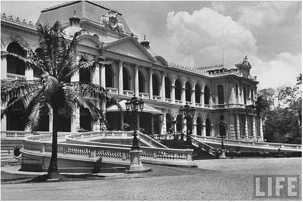

Sài Gòn trong kí ức tôi là chiếc máy bay quân sự DC 130 đưa tôi và chị Bạch Bích từ sân bay Đà Nẵng đến Biên Hòa một sáng mùa hè tháng 4 năm 1972, rồi sau đó chiếc Taxi chở hai chị em trực chỉ về Sài Gòn.
Mùi thơm của hương sầu riêng mãi mãi làm tôi nhớ Chợ Lớn khi chiếc taxi đi thoăn thoắt qua những con đường Sài Gòn mà tầm mắt tôi không quan sát kịp. Khi qua Chợ Lớn, hương sầu riêng thoảng nhẹ trong không khí gây tôi một ấn tượng khó quên. Tôi phóng nhìn ra ngoài, đường một chiều, là đường Đồng Khánh. Xe cộ chạy vun vút. Buồn cười nhất là mấy chiếc cyclo máy đưa càng để chân ra trước lao nhanh sau xe hơi làm tôi cứ sợ cho người ngồi trên xe, không khéo nó vất người ta vào xe chạy phía trước thì còn chi nữa!
Chiếc cyclo máy làm tôi bồi hồi. Có thể là vì hình ảnh những quyển vở học trò ngày nào tôi học trên ghế nhà trường mà ngoài bìa là hình chiếc xe cyclo máy. Những quyển vở cho tôi những trang giấy để tôi nắn nót từng con chữ, làm từng bài toán, …
Tôi vẫn nhớ cửa tiệm bán Radio, TV của ngôi nhà một tầng lầu nhà ông Bác. Đêm đó, tôi không ngủ được vì tiếng động cơ xe chạy cho đến khi không gian bỗng trở nên yên tĩnh hoàn toàn. Tôi ngạc nhiên nhìn đồng hồ: đã 12 giờ đêm, ấy là giờ giới nghiêm.
Sài Gòn trong kí ức tôi là buổi sáng tôi và chị B. Bích ngồi trong taxi ở bến xe đi về Đà Lạt, đôi mắt cô bé bán báo mở to mời mua tạp chí. Bạch Bích mĩm cười dí dõm: Chị không biết đọc!
Cô bé bán báo mĩm cười tinh nghịch:
- Cô không biết đọc thì có chú đây đọc!
Bạch Bích cười khúc khích:
- Chú đây cũng không biết đọc.
Nói thì vậy nhưng chị Bạch Bích mua tạp chí “Tuổi hoa” và tờ báo Sóng thần.
- Cám ơn cô!
Sài Gòn trong kí ức tôi là những ngày chấm thi tú tài 2 tại Trung tâm Pétrus Ký Sài Gòn. Lúc đó tôi đang đấu láo với một giáo sư khác vì Hội đồng đã chấm xong. Hai em nữ sinh mặc áo dài trắng, quần đen rụt rè tiến lại phía chúng tôi. Một em nói:
- Thưa thầy đã có kết quả chưa ạ?
Tôi nhanh nhẩu:
- Sắp rồi em!
Em nữ sinh bên cạnh đưa tôi tờ giấy ghi hai số kí danh:
- Thưa thầy nhờ thầy dò giúp chúng em được không ạ.
Tôi đưa mắt nhìn Chu. Chu nói:
- Mầy vào dò giúp hai em đi!
Tôi cầm giấy kết quả đưa cho em tóc cắt ngắn, cũng không để tâm đến em nào trúng, em nào trượt. Mãi đến khi tôi bắt gặp một em tái mặt, nước mắt vòng quanh, một em lại nhảy cởn lên vì vui mừng, lúc đó tôi mới biết là em đậu, em rớt.
Sài Gòn trong kí ức tôi là những ngày ăn cơm dĩa ở câu lạc bộ sinh viên khoa học để chấm thi…. Đĩa cơm sườn, mấy lát dưa chuột, trái chuối tráng miệng, ly trà đá.
Sài Gòn trong kí ức tôi là những ngày chờ ra Hội đồng miển dịch tại Trung tâm 3 nhập ngũ. Con đường Trương Minh Ký dẫn đến Viện Đại học vạn Hạnh, ly cà phê đen bên vệ đường, lần nói chuyện với đứa bạn học ở đó chờ được gặp mặt GS Phạm Công Thiện. Và quán cho thuê truyện với mấy bộ truyện kiếm hiệp Kim Dung: Võ lâm ngũ bá, Thần điêu đại hiệp, Anh hùng xạ điêu.
Sài gòn trong kí ức tôi là những sáng chủ nhật cùng thằng bạn ngồi bên đĩa thịt bò kho, ly cà phê đá tại nhà hàng Thanh Bạch, dõi mắt nhìn sinh hoạt Sài Gòn ngày nghỉ, những cô gái Sài Gòn trong tà áo dài, chiếc mini jupe, đầu tóc cắt ngắn, …
Tôi đã mãi mê nhìn ngắm những cô gái Sài Gòn không chán mắt, lòng vẫn tự nhủ, phải chăng khí hậu miền Nam mưa nắng điều hòa đã làm cho người Sài gòn xinh đẹp, phóng khoáng, chất phác.
Đã nhiều lần, tôi đi quanh các con đường Lê Lợi, Lê Thánh Tông, những hàng trái cây chôm chôm, ổi, xoài, sầu riêng xanh tốt, mơn mởn, hấp dẫn, lòng vẫn mơ ước làm sao để có một ngôi nhà tại Sài Gòn.
Sài Gòn trong kí ức tôi là những chiều buồn lang thang trên các con đường đầy lá me bay, Phan Thanh Giản, Nguyễn Du, Yên Đổ, những khu tư gia người Anh kín cổng, cao tường. Tôi vừa đi vừa đá những chiếc lá vàng và nghĩ đến em với nỗi buồn tương lai bất định.
Sài Gòn trong kí ức tôi là những sáng đẹp trời, căn phòng lầu 5 của ngôi nhà ở đường Thoại Ngọc Hầu mà bà chị đã thuê. Nàng đến với tôi, chiếc áo chemise ca rô đen trắng, chiếc quần đen đơn giản. Và chúng tôi hạnh phúc bên nhau trong một tương lai đen tối. Đó là Sài gòn của những ngày tháng XHCN, Sài Gòn của thời bao cấp. Sài Gòn của nỗi sợ hãi bất an.
Sài Gòn trong kí ức tôi là những sáng nắng chiều mưa. Những cơn mưa vội vã đến, vội vã đi. Làm sao tôi giữ được nàng trong tầm với của vòng tay ngắn ngủi. Làm sao tôi hạnh phúc được với nàng trong một ngày mà không bao giờ phải nghĩ đến chuyện non nước mình?
Ôi! Sài Gòn trong kí ức tôi là nỗi ngậm ngùi của một thuở hoàng kim không bao giờ còn gặp lại, là một giấc mơ đẹp bị người ta phá nát. Là hình ảnh của em một thuở vàng son lên ngôi bị chà đạp xuống tận đáy cùng của địa ngục.
Làm sao tôi quên được Sài Gòn! Làm sao tôi quên được em!
Làm sao tôi quên được kỉ niệm!
Sài Gòn tuy xa mà gần biết bao nhiêu. Đã biết bao lần tôi đã quay cuồng vì nhớ Sài Gòn.
Sài Gòn không phải là quê hương nơi tôi mở mắt chào đời nhưng là chiếc nôi ươm mầm cho những khát vọng đất nước tôi một mai thanh bình.
Sài Gòn với tôi đã xa lạ hoàn toàn. Tôi lạc lỏng trong thành phố với những ngôi nhà chọc trời, những chiếc xe hơi xịn hàng chục tỉ bạc, bóng lộn chạy trên những con đường ngập nước triều cường, ngập mùi tanh của tham ô và dối trá, ngập tiếng cười khả ố và trơ trẻn.
Ôi! Sài Gòn của tôi.
(Tuấn Nguyễn)